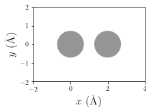
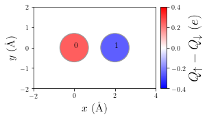
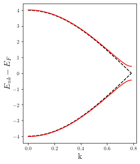

[1]:
import sisl
from hubbard import HubbardHamiltonian, sp2, density, plot
%matplotlib inline
Periodic structures (perfect crystals, Bloch’s theorem)
In this example we study the effect of on-site Coulomb interactions for electrons in periodic systems by solving the mean-field Hubbard equation.
We will start by building the geometry and the TB Hamiltonian for a 1D periodic chain of Carbon atoms using sisl.
[2]:
# Build sisl.Geometry object for a periodic 1D chain of Carbon atoms
geom = sisl.Geometry([[0,0,0], [2.,0,0]], atoms=sisl.Atom(6), sc=[4,100,10])
geom.set_nsc([3,1,1])
# Plot geometry of unit cell
p = plot.GeometryPlot(geom, cmap='Greys', figsize=(3,2))

We firstly build the TB sisl.Hamiltonian with the flag spin='polarized (for spin polarized calculations)
[3]:
# Build sisl.Hamiltonian object using sisl
H0 = sisl.Hamiltonian(geom, spin='polarized')
for ia in geom:
idx = geom.close(ia, R=(0,2.1))
H0[ia, idx[0]] = 0
H0[ia, idx[1]] = -2.
Now one can build the HubbardHamiltonian object, which enables the routines stored in this class to converge the mean-field Hubbard Hamiltonian to find the self-consistent solution. To model the interaction part (Hubbard term) we will use U=3.5 eV. In this case, since the system has periodic boundary conditions, the Hamiltonian will be diagonalized per \(\mathbf k\)-point to find the spin-densities. To do so one just need to pass the argument nkpt=[nkx, nky, nkz] when creating
the HubabrdHamiltonian(...) object. This argument will set the number of \(\mathbf k\)-points along each direction in which the Hamiltonian will be sampled in k-space.
[4]:
# Build the HubbardHamiltonian object with U=3.5 at room temperature
HH = HubbardHamiltonian(H0, nkpt=[100,1,1], U=3.5, kT=0.025, q=(1,1))
As in this example one has to break symmetry between up and down electrons so the program can find a self-consistent solution. To do so we can place one up electron on site 0 and one down electron on site 1.
[5]:
HH.set_polarization([0], dn=[1])
Now we can start the convergence until we find the self-consistent solution up to a desired tolerance (tol) by calling the hubb.HubbardHamiltonian.converge method. This method needs of another method to tell the code how to build the spin-densities. For instance, to compute the spin-densities for TB Hamiltonians with finite or periodic boundary conditions, one could use the method density.calc_n.
[6]:
# Converge until a tolerance of tol=1e-10, print info each 10 iterations
dn = HH.converge(density.calc_n, tol=1e-10, print_info=True, steps=10)
HubbardHamiltonian: converge towards tol=1.00e-10
10 iterations completed: 0.0063626212646060165 -3.347981808109207
20 iterations completed: 0.0001918556205354749 -3.3579954880129295
30 iterations completed: 2.7045032879868813e-13 -3.35833095942144
found solution in 30 iterations
Also we can visualize some meaningful physical quantities and properties of the solution, e.g. such as the spin polarization of the unit-cell. Other interesting electronic properties can be visualized using the hubbard.plot module.
[7]:
# Let's visualize some relevant physical quantities of the final result (this process may take a few seconds)
p = plot.SpinPolarization(HH, colorbar=True, vmax=0.4, vmin=-0.4, figsize=(4,3))
p.annotate(size=12)

[8]:
# Shift Hamiltonian with Fermi level to have it aligned to zero
HH.shift(-HH.fermi_level())
# Calculate bands for the bare TB Hamiltonian
band_0 = sisl.BandStructure(H0, [[0., 0., 0.], [1./2, 0., 0.]], 301, [r'$\Gamma$', 'X'])
# Also for the converged MFH Hamiltonian
band_MFH = sisl.BandStructure(HH.H, [[0., 0., 0.], [1./2, 0., 0.]], 301, [r'$\Gamma$', 'X'])
# Calculate eigenvalues of the band-structure
eigs_0 = band_0.eigh()
eigs_MFH = band_MFH.eigh()
# Plot them
import matplotlib.pyplot as plt
plt.figure(figsize=(4,5))
plt.xlabel('k', size=16)
plt.ylabel(r'$E_{nk}-E_{F}$', size=16)
# Generate linear-k for plotting (ensures correct spacing)
lband = band_0.lineark()
for i in range(eigs_0.shape[1]):
plt.plot(lband, eigs_0[:, i], 'k--')
plt.plot(lband, eigs_MFH[:, i], 'r')
